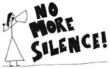
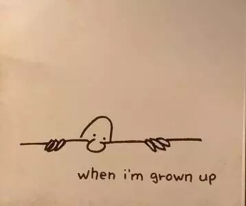
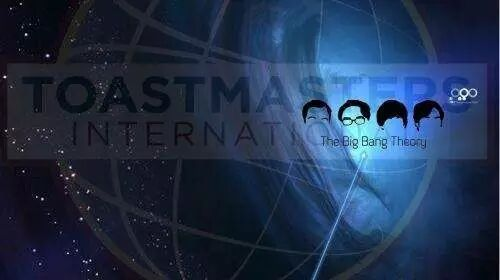

Time：19:30-21:30, Friday, 7th April
Venue: Room B104, The New Main Building, Beihang University.
Table Topic: Plan your life
It's not only because the every-year graduation of the postgraduate that remind us how do we make a reasonable plan of our future life, but more important is that we need to confirm a attitude of plan our life without intermittion, thusly can we get more fresh enegy and power to move on.
Prepared speech part(CC)
Num 1 speaker: May No more silence--CC1

New member May is going to bring her first cc-speech to us this friday, who has just joined in Beihang TMC last meeting, anyway, what story will may may tell us? will her voice be louder than before and that's why she settle down this title as her speech name? let's wait and see~~
Num 2 speaker: Rocky Happy Brirthday to my university-CC2
Hansome boy Rocky said he had a lot to appreciate, but this time he would firstly send his wishes and appreciation to his university where he lives, at a perspective of his own. just like a man prepared a confession to his beloved, will you miss it?
Num 3 speaker: Fiona Grown-up essence-CC2

The essence of grown-up, is a intricate problem, maybe you can't even find a key to this answer, maybe it has no answer, so what will fiona show us raise my interests, at my view, i don't want grow up, and you?
Toastmasters International (TI) is a non-profit educational organization that operates clubs worldwide for the purpose of helping members improve their communication, public speaking, and leadership skills.


https://mp.weixin.qq.com/s/uKMXnFVxZ8MF1Om_qTZe0w
本页为抢救式本地归档，图文已永久保存。